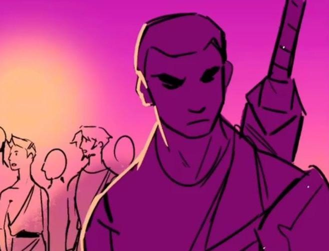

Euríloco é um dos companheiros mais importantes de Odisseu durante a viagem, sendo um homem experiente e atento aos perigos ao redor. Diferente de outros membros da tripulação, ele não confia facilmente nas decisões do líder, demonstrando um lado mais cauteloso e desconfiado.
Sua postura cria momentos de tensão dentro do grupo, pois ele frequentemente questiona Odisseu. Ainda assim, sua presença é essencial, mostrando que diferentes pontos de vista podem influenciar o rumo da jornada.